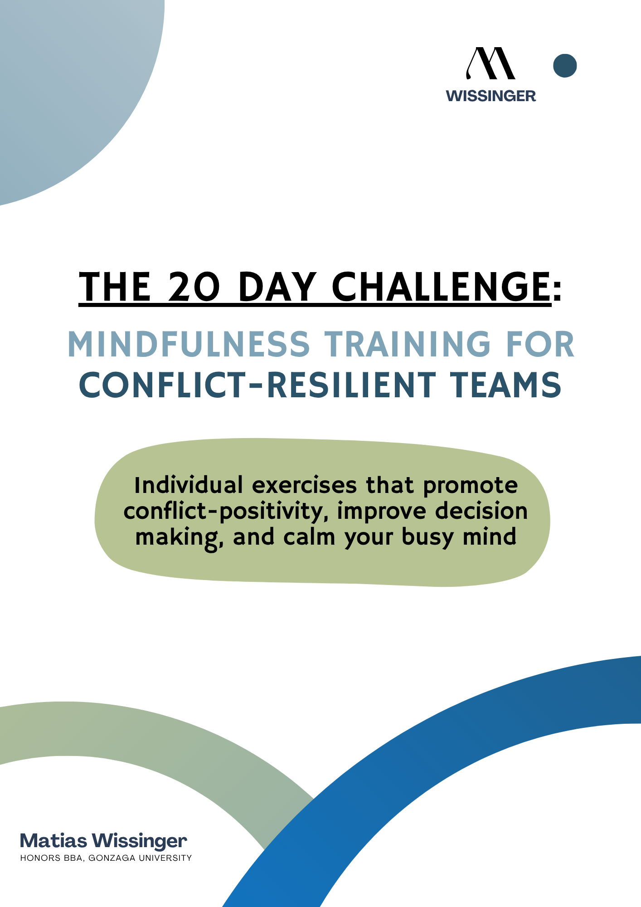
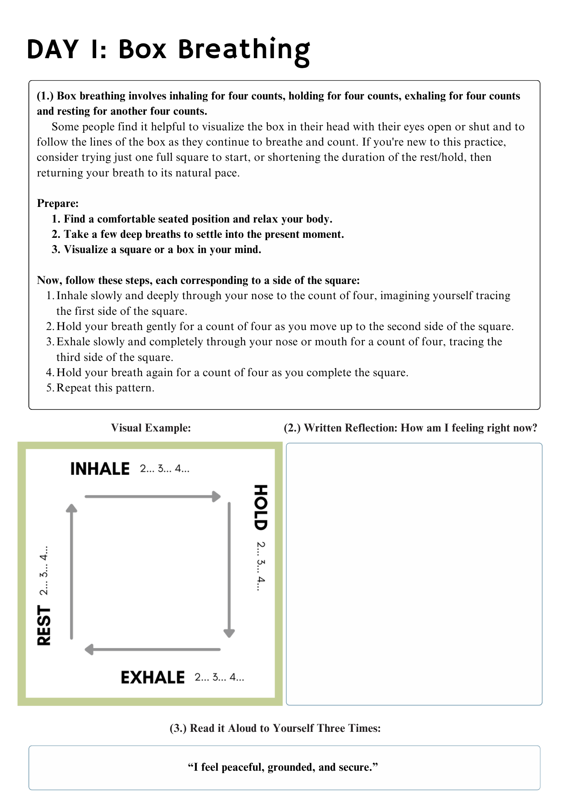
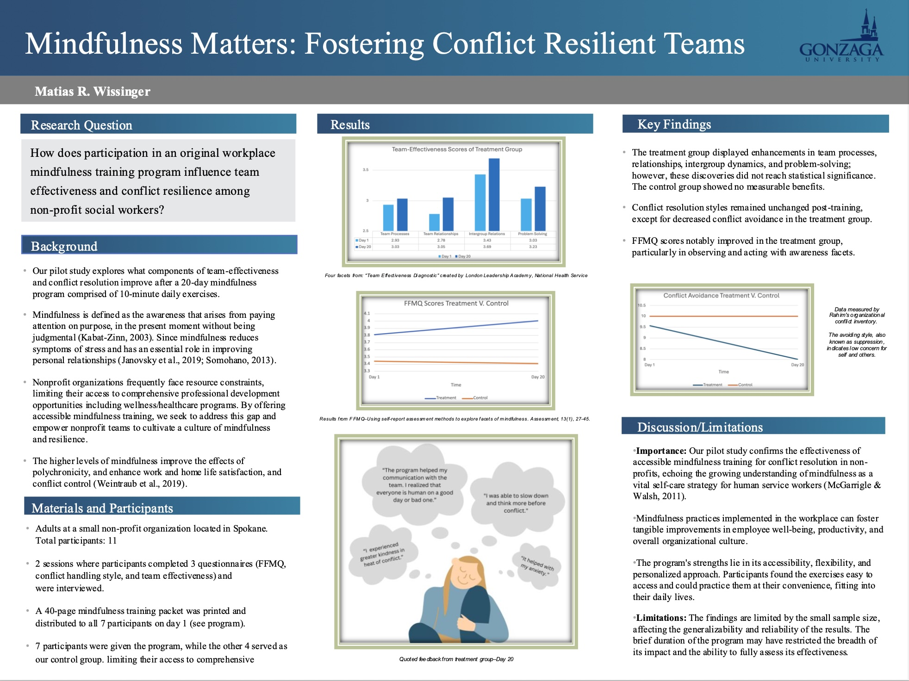
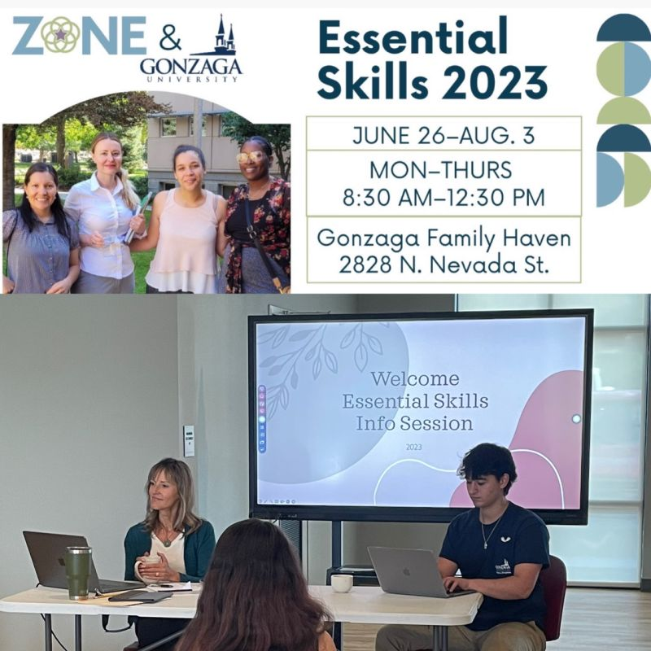
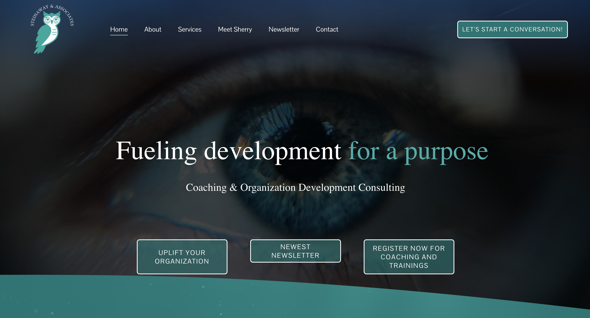
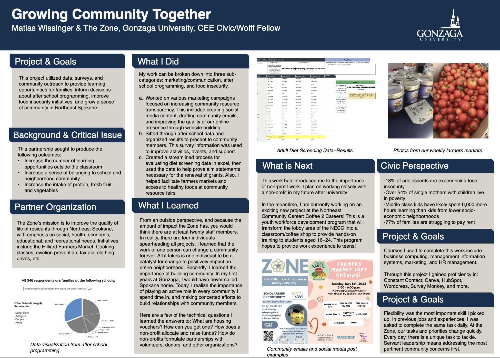
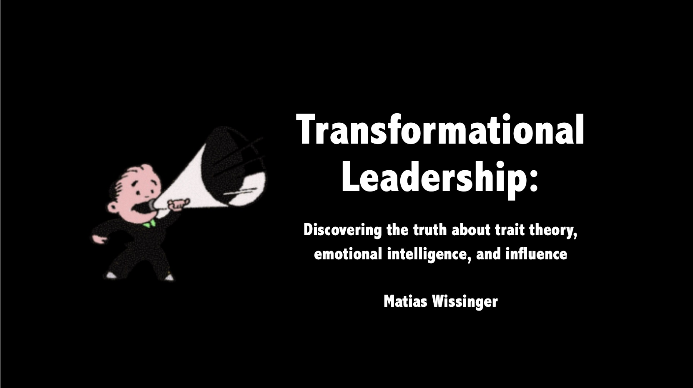

This original program introduces daily, science-based mindfulness exercises to promote calm and conflict-resilient communication within teams. The training integrates structured journaling, breathwork, and media visualization techniques.

How does participation in an original workplace mindfulness training program influence team effectiveness and conflict resilience among social workers?
This pilot study introduced a 20-day mindfulness training program at a small nonprofit. Results suggested improvements in team process, mindfulness facets, and reduced conflict avoidance.

A six-week career development series for unemployed and underemployed women in Northeast Spokane, focused on career exploration, skill-building, industry exposure, leadership, and financial literacy. Contributed to curriculum design and independently taught professional development classes.
To read more about the program and our impact:
gonzaga.edu/news-events/stories/2024/9/19/essential-skills-program
View 2023 Program Data
Read some of my teaching reviews!

Worked with an organizational development consultant to craft a clear brand story, using research to help guide culturally thoughtful communication strategies.

This poster summarizes a year-long research and community engagement role focused on data collection, survey design, and market research. I administered surveys to local residents, presented findings at community hall meetings, supported grant writing efforts, and helped coordinate the Northeast Community Center Farmers Market.
Hear former co-workers talk about the ZoNE:

Long before I knew what organizational behavior was, I wrote my high school senior thesis on transformational leadership. Looking back, it was a pretty strong hint.